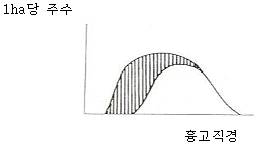
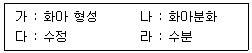
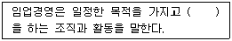
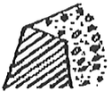
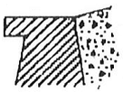
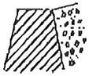
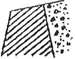
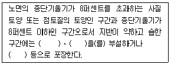

산림산업기사 (2017-03-05 기출문제)
1과목: 조림학
1. 꽃이 핀 그 해 가을 종자가 성숙하는 수종은?
- Larix Kaempferi
- Pinus densiflora
- Torreya nucifera
- Quercus variabilis
(정답률: 61%)

2. 산벌작업 순서로 옳은 것은?
- 후벌 -＞ 하종벌 -＞ 예비벌
- 하종벌 -＞ 예비벌 -＞ 후벌
- 예비벌 -＞ 후벌 -＞ 하종벌
- 예비벌 -＞ 하종벌 -＞ 후벌
(정답률: 89%)
3. 수목의 기본구조 중에서 영양구조에 해당하는 기관만으로 올바르게 짝지어진 것은?
- 잎, 뿌리, 줄기
- 꽃, 열매, 종자
- 종자, 열매, 줄기
- 뿌리, 줄기, 열매
(정답률: 85%)
4. 산림토양의 수직적 단면 순서를 표면에서부터 바르게 나열한 것은?
- 유기물층 -＞ 집적층 -＞ 용탈층 -＞ 모재층
- 유기물층 -＞ 집적층 -＞ 모재층 -＞ 용탈층
- 유기물층 -＞ 용탈층 -＞ 모재층 -＞ 집적층
- 유기물층 -＞ 용탈층 -＞ 집적층 -＞ 모재층
(정답률: 70%)
5. 묘목 식재를 위하여 뿌리를 잘라주는 주요 목적은?
- 인건비가 절감된다.
- 양분 소모를 막는다.
- 수분의 소모를 막는다.
- 가는 뿌리 발달이 좋아진다.
(정답률: 92%)
6. 묘포지 구비조건에 대한 설명으로 옳지 않은 것은?
- pH 7.5 이상의 알칼리성 토양이 좋다.
- 평탄지보다 5°이하의 완경사지가 좋다.
- 토심이 깊고 부식질이 많은 비옥한 사양토가 좋다.
- 사방이 높은 산으로 막힌 산간 지역의 좁은 계곡 지역은 피해야 한다.
(정답률: 85%)
7. 동령임분의 흉고직경 분포를 나타낸 그림에서 빗금 친 부분을 간벌하였다면 어떠한 간벌방식이 적용된 것인가?

- 하층간벌
- 상층간벌
- 택벌식간벌
- 기계적간벌
(정답률: 87%)
8. 숲의 교란과 복원에 대한 설명으로 옳지 않은 것은?
- 교란의 종류에는 산불, 산사태, 병충해가 해당된다.
- 교란은 생태계의 구조와 기능에 심각한 영향을 끼친다.
- 훼손은 발생빈도, 공간규모, 훼손강도가 일정한 패턴을 띤다.
- 훼손된 생태계가 복원되기란 매우 어렵고 시간이 많이 걸린다.
(정답률: 91%)
9. 글라신 액제를 사용한 덩굴제거 작업에 대한 설명으로 옳지 않은 것은?
- 모든 임지에 적용 가능하다.
- 광엽잡초나 콩과식물을 선택적으로 제거한다.
- 신진대사를 교란시켜 뿌리까지 고사시킬 수 있다.
- 덩굴류 생장기인 5~9월 중에 작업하는 것이 효과적이다.
(정답률: 66%)
10. 광색소에서 파이토크롬에 대한 설명으로 옳지 않은 것은?
- 햇빛을 받으면 합성이 일부 금지되거나 파괴된다.
- 높은 광조건하에서 기른 식물체 내에서 많이 검출된다.
- 피롤(pyrrole) 4개가 모여서 이루어진 발색단을 가진다.
- 분자량이 120000Da(dalton)가량 되는 두 개의 동일한 폴리펩타이드로 구성되어 있다.
(정답률: 77%)
11. 왜림작업에 관한 설명으로 옳은 것은?
- 소나무림의 갱신에 쉽게 적용할 수 있다.
- 신탄재나 연료재 생산림을 경영할 때 적용하기 쉽다.
- 왜림작업 지역은 산불 발생의 위험성이 교림지역보다 낮다.
- 왜림 조성을 위한 갱신 벌채는 맹아 발생이왕성한 여름철이 좋다.
(정답률: 79%)
12. 무성번식의 장점으로 옳지 않은 것은?
- 초기생장이 빠르다.
- 개화 및 결실이 빠르다.
- 실생묘에 비해 대량생산이 쉽다.
- 모수의 유전형질을 이어받을 수 있다.
(정답률: 79%)
13. 택벌작업의 장점이 아닌 것은?
- 토양이 보호된다.
- 하층목 손상이 거의 없다.
- 잔존 수목의 결실이 잘된다.
- 좁은 면적의 경우 보속적 수확을 올리는 작업을 할 수 있다.
(정답률: 78%)
14. 소나무 종자 시료를 1kg 채취하여 협잡물 100g을 골라내어 정선하였고, 정선된 종자의 발아율 시험 결과 87%인 경우 소나무 종자의 효율은?
- 78.3%
- 79.2%
- 84.7%
- 85.8%
(정답률: 72%)
15. 생가지치기를 할 경우 부후의 위험성이 가장 높은 수종은?
- 소나무
- 삼나무
- 단풍나무
- 일본잎갈나무
(정답률: 79%)
16. 이령림과 비교한 동령림에 대한 특징으로 옳지않은 것은?
- 대부분 사람에 의해 조성된 숲이다.
- 숲을 구성하고 있는 나무의 나이가 같거나 거의비슷하다.
- 숲의 공간적 구조가 복잡하고 생태적 측면에서 안정적이다.
- 일반적으로 크기가 비슷한 나무를 단위 면적당 많이 생산할 수 있다.
(정답률: 93%)
17. 종자의 품질을 나타내는 순량률은 종자의 무엇을기준으로 한 것인가?
- 수량
- 부피
- 크기
- 무게
(정답률: 85%)
18. 동일한 수목의 양엽과 음엽을 비교한 설명으로옳지 않은 것은?
- 양엽은 음엽보다 광포화점이 높다.
- 음엽은 양엽보다 잎의 두께가 두껍다.
- 음엽은 양엽보다 엽록소 함량이 더 많다.
- 양엽은 음엽보다 책상조직이 빽빽하게 배열되어 있다.
(정답률: 88%)
19. 수목의 개화생리 순서로 옳은 것은?

- 나 - 가 - 다 - 라
- 나 - 라 - 가 - 다
- 가 - 나 - 다 - 라
- 가 - 나 - 라 - 다
(정답률: 82%)
20. 풍매화에 해당하지 않는 수종은?
- 호두나무
- 자작나무
- 버드나무
- 이태리포플러
(정답률: 50%)
2과목: 산림보호학
21. 병원체임을 입증하는 방법으로 파이토플라스마와 같은 절대 기생체 적용되지 않는 조건은?
- 병원균은 반드시 환부에 존재한다.
- 분리된 병원균은 인공 배지상에서 배양될 수 있어야 한다.
- 배양한 병원균을 접종하여 동일한 병이 발생되어야 한다.
- 발병한 환부에서 접종균과 동일한 병원균이 재분리되어야 한다.
(정답률: 74%)
22. 잠복기간이 가장 긴 수목병은?
- 소나무 혹병
- 잣나무 털녹병
- 포플러 입녹병
- 낙엽송 잎떨림병
(정답률: 59%)
23. 잣나무 털녹병 방제방법으로 적합하지 않은 것은?
- 중간기주를 제거한다.
- 내병성 품종을 심는다.
- 토양속독을 철저히 한다.
- 병든 나무는 지속적으로 제거한다.
(정답률: 82%)
24. 식물기생선충에 대한 설명으로 옳지 않은 것은?
- 고착성 선충과 이동성 선충으로 구분한다.
- 선충에 의해 병이 발생하면 병징은 지상부에서만나타난다.
- 생활사의 일부 또는 전부가 토양을 경유하는 토양선충이 대부분이다.
- 선충이 분비하는 침과 분비물에 의해 식물의생리적 변화가 발생한다.
(정답률: 82%)
25. 일반적으로 연간 발생횟수가 가장 많은 해충은?
- 매미나방
- 솔잎혹파리
- 밤나무 혹벌
- 미국흰불나방
(정답률: 83%)
26. 솔껍질깍지벌레에 대한 설명으로 옳지 않은 것은?
- 전성충은 수컷에서만 볼 수 있다.
- 암컷은 수컷보다 2령 약충 기간이 길다.
- 암컷은 불완전변태를 수컷은 완전변태를 한다.
- 주로 소나무에 피해를 주며 곰솔에는 피해를 주지 않는다.
(정답률: 79%)
27. 소나무종 신성충이 가해하는 분위는?
- 잎
- 수간
- 새 가지
- 오래된 가지
(정답률: 75%)
28. 나무의 수피와 목질부 표면을 환상으로 식해하며 거미줄을 토하여 벌레똥과 먹이 잔재물을 식해부위에 칠하여 놓는 해충은?
- 박쥐나방
- 알락하늘소
- 광른긴나무좀
- 잣나무넓적잎벌
(정답률: 76%)
29. 해충 방제에 사용되는 천적 곤충이 아닌 것은?
- 기생벌
- 무당벌레
- 풀잠자리
- 투리사이드
(정답률: 79%)
30. 수목병을 일으키는 바이러스의 전염 수단이나 방법으로 가장 거리가 먼 것은?
- 바람
- 접목
- 종자
- 토양선충
(정답률: 77%)
31. 해충 방제를 위한 물리적 방제방법이 아닌 것은?
- 고온처리
- 습도처리
- 방사선처리
- 토양소독처리
(정답률: 59%)
32. 우리나라 산불의 원인으로 가장 빈도수가 낮은 것은?
- 담뱃불
- 입산자 실화
- 벼락에 의한 경우
- 논과 밭두렁의 소각
(정답률: 88%)
33. 완전변태를 하는 해충은?
- 대벌레
- 노린재
- 가루깍지벌레
- 도토리거위벌레
(정답률: 72%)
34. 밤나무 줄기마름병에 대한 설명으로 옳지 않은 것은?
- 병원체는 담자균이다.
- 질소비료를 적게 주고 상처가 나지 않도록 한다.
- 동해 및 열해를 받아 형성층이 손상된 경우 쉽게 감염된다.
- 발생 초기에는 감염 수목의 수피가 황갈색 또는적갈색으로 변한다.
(정답률: 73%)
35. 낙엽송 잎떨림병의 방제방법으로 가장 효과적인 것은?
- 10월경 낙엽을 모아 태운다.
- 중간기주인 참나무류를 제거한다.
- 매개충인 끝동매미충을 방제한다.
- 일본잎갈나무의 단순림을 조성한다.
(정답률: 69%)
36. 조류에 의한 수목의 피해로 옳지 않은 것은?
- 딱따구리 - 줄기 가해
- 직박구리 - 과실 가해
- 올빼미 - 어린 순 가해
- 백로류 - 배설물로 인한 나무의 고사
(정답률: 79%)
37. 수목치료를 위한 수간주입방법 중 주입기 용량이 가장 적은 것은?
- 중력식
- 삽입식
- 흡수식
- 미세압력식
(정답률: 76%)
38. 모잘록병 방제방법으로 옳지 않은 것은?
- 파종상에서는 토양소독을 한다.
- 토양산도가 염기성이 되도록 한다.
- 묘상이 과습하지 않도록 주의한다.
- 질소질 비료보다 인산, 칼륨질 비료를 더 많이 준다.
(정답률: 73%)
39. 대기오염에 의한 산림의 피해를 최소화시킬 수 있는 방안으로 거리가 먼 것은?
- 방음벽 시설 설치
- 공해배출의 법적 규제
- 공해저항성 수종의 식재
- 임지비배를 통한 산림관리
(정답률: 88%)
40. 소나무 재선충병 방제방법으로 옳지 않은 것은?
- 매개충의 방제
- 감염된 수목은 벌채 후 소각
- 매개충 우화 최성기에 나무주사 처리
- 포스티아제이트 액제를 이용한 토양관주
(정답률: 67%)
3과목: 임업경영학
41. 삼각법을 응용한 수고 측고기는?
- 와이제 측고기
- 아소스 측고기
- 크리스튼 측고기
- 블루메라이스 측고기
(정답률: 61%)
42. 수확조정 방법에 대한 설명으로 옳지 않은 것은?
- 면적조정법은 주로 택벌작업에 응용된다.
- 임분경제법과 등면적법은 영급법에 속한다.
- 재적배분법, 재적평분법 등은 재적수확의 보속을추구한다.
- 면적평분법, 순수영급법 등은 법정상태의 실현을추구한다.
(정답률: 59%)
43. 순현재가치를 영(0)이 되게 하는 할인율의 크기로투자효율을 평가하는 방법은?
- 회수기간법
- 순현재가치법
- 내부수익률법
- 수익비용비법
(정답률: 57%)
44. 임분의 재적을 추정할 때 전 임목을 몇 개의계급으로 나누어 각 계급의 본수를 동일하게 한다음 각 계급에서 같은 수의 표준목을 선정하는 방법은?
- 단급법
- Urich법
- Hartig법
- Draudt법
(정답률: 81%)
45. 임업경영을 경제적 특성과 기술적 특성으로 구분할때 기술적 특성에 해당하는 것은?
- 생산기간이 대단히 길다.
- 육성임업과 채취임업이 병존한다.
- 원목가격의 구성요소 대부분이 운반비이다.
- 임업노동은 계절적 제약을 크게 받지 않는다.
(정답률: 55%)
46. 주벌수확의 임목가격을 사정하기 위해 일반적으로고려하지 않는 것은?
- 조재율
- 단위재적당 채취비
- 총재적의 재종별 제작
- 화폐가치 하락에 의한 임목 가격의 상대적 등귀
(정답률: 63%)
47. 이상적인 임분의 재적 또는 흉고단면적에 대한실제 임분의 재적 또는 흉고단면적의 비율로 나타내는 임분밀도의 척도는?
- 입목도
- 상대밀도
- 임분밀도지수
- 상대공간지수
(정답률: 55%)
48. 산림 경리의 업무 내용이 아닌 것은?
- 산림 조사
- 조림 계획
- 수확 규정
- 임업소득률 결정
(정답률: 60%)
49. 총비용과 총수익이 같아져서 이익이 0(zero)이되는 판매액의 수준을 무엇이라 하는가?
- 고정비
- 변동비
- 손실영역
- 손익분기점
(정답률: 91%)
50. 흉고직경이 50cm, 수고가 18m, 수간재적이 1.59m3인입목의 흉고형수는? (단, π= 3.14)
- 약 0.40
- 약 0.45
- 약 0.50
- 약 0.55
(정답률: 63%)
51. 산림평가에 영향을 끼칠 수 있는 주요 산림구성내용이아닌 것은?
- 임지
- 임목
- 관리비
- 부산물
(정답률: 69%)
52. 10년 후에 100만 원의 가치가 있는 산림의 전가(현재가)는? (단, 이율은 5%)
- 약 853000원
- 약 613900원
- 약 653000원
- 약 813900원
(정답률: 65%)
53. 벌채목의 중앙단면적과 재장의 길이로 재적을측정하는 방법은?
- 후버식
- 뉴턴식
- 스말리안식
- 브레레튼식
(정답률: 77%)
54. 유령림의 임목 평가에 가장 적합한 방법은?
- 환원가법
- 기망가법
- 비용가법
- 매매가법
(정답률: 80%)
55. 다음 ( )안에 들어갈 용어로 가장 적합한 것은?

- 경제활동
- 임업생산
- 경제적 기능
- 공익적 기능
(정답률: 75%)
56. 감가상각비 계산을 위한 요소가 아닌 것은?
- 취득원가
- 잔존가치
- 자산상태
- 추정내용연수
(정답률: 81%)
57. 국유림경영계획을 위한 지황 조사항목에 대한설명으로 옳지 않은 것은?
- 방위는 8방위로 구분한다.
- 무립목지는 미립목지와 제지로 구분한다.
- 경사도에서 험준지는 25°이상 30°미만을 말한다.
- 임도에서 도로까지 450m인 경우 지리는 4급지로표시한다.
(정답률: 71%)
58. 면적이 150ha이고 윤벌기가 30년이며 1개의영급이 10개의 영계로 구성되어 있는 산림의법정영급면적은?
- 3ha
- 30ha
- 50ha
- 300ha
(정답률: 81%)
59. 산림자원의 조성 및 관리에 관한 법률 규정에의한 산림기술자 중 산림 경영기술자의 업무범위가 아닌 것은?
- 산림경영계획의 수립
- 임도사업과 사방사업의 설계 및 시공
- 도시림 등의 조성 사업 설계 및 시공
- 산림병해충 방제 관련 사업 설계 및 시공
(정답률: 55%)
60. 중령림 평가방법으로 원가 수익절충 방식을적용하는 대표적인 평가 방법은?
- Glaser법
- 매매가법
- 수익환원법
- 임목기망가법
(정답률: 80%)
4과목: 산림공학
61. 외래 초본류를 도입하여 사용하는 파종공법에대한 설명으로 옳지 않은 것은?
- 재래 초본류를 혼합하여 사용하지 않는다.
- 일반적으로 발아가 빠르고 조기에 피복한다.
- 생육이 왕성하여 뿌리의 자람이 좋은 편이다.
- 지표의 유기물질을 집적하여 토양의 성질을 개선해 준다.
(정답률: 81%)
62. 해안사지 조림용 수종의 구비조건으로 거리가 먼 것은?
- 바람에 대한 저항력이 클 것
- 양분과 수분에 대한 요구가 클 것
- 온도의 급격한 변화에도 잘 견디어 낼 것
- 울폐력이 좋고 낙엽, 낙지 등에 의하여지력을 증진시킬 수 있을 것
(정답률: 90%)
63. 임도망 편성에 있어 설치 위치별 분류에 해당되지않는 것은?
- 계곡임도
- 사면임도
- 임연임도
- 능선임도
(정답률: 74%)
64. 트랙터 주행장치의 유형에서 타이어방식과 비교한크롤러 바퀴방식의 특징으로 옳지 않은 것은?
- 기동력이 높다.
- 회전 반지름이 작다.
- 가격이 고가이고 수리 유지비가 많이 소요된다.
- 견인력과 접지면적이 커서 험준한 지형에서도주행성이 양호하다.
(정답률: 56%)
65. 사방댐 중에서 흙댐의 경우 댐 높이가 10m일 때댐 마루 나비는?
- 2m
- 2.5m
- 3m
- 3.5m
(정답률: 55%)
66. 비탈안정공법에 해당되지 않는 것은?
- 자연석 쌓기
- 격자틀붙이기
- 비탈힘줄박기
- 종비토뿜어붙이기
(정답률: 71%)
67. 반송기를 사용하는 장비는?
- 체인톱
- 예불기
- 펠러번처
- 타워야더
(정답률: 75%)
68. 임도의 선형 설계에서의 제약요소로 가장 거리가먼 것은?
- 기상 조건의 제약
- 시공상에서의 제약
- 지질, 지형에서의 제약
- 사업비, 유지관리비 등에서의 제약
(정답률: 60%)
69. 산지사방 기초공사에 해당되지 않는 것은?
- 바자얽기
- 누구막이
- 비탈다듬기
- 땅속흙막이
(정답률: 56%)
70. 벌목작업시 수구를 만드는 방향은?
- 계곡 쪽
- 임도가 있는 쪽
- 작업자가 있는 쪽
- 벌도목이 넘어지는 쪽
(정답률: 78%)
71. 적정 임도밀도가 25m/ha인 산림에서 도로 양쪽에서임목을 집재한다면 이 지역의 평균 집재거리는?
- 25m
- 50m
- 100m
- 200m
(정답률: 56%)
72. 임도 설계에서 교각법에 의하여 단곡선 설정시내각이 90°, 곡선반경이 500m이면 접선길이는?
- 100m
- 250m
- 500m
- 1000m
(정답률: 62%)
73. 사방댐에서 일반적으로 가장 많이 사용되는 댐마루의형상은? (단, 그림에서 빗금 부분이 사방댐임)




(정답률: 77%)
74. 와이어로프의 폐기기준으로 옳지 않은 것은?
- 킹크 상태인 것
- 현저하게 변형된 것
- 와이어로프 소선이 10% 이상 절단된 것
- 마모에 의한 직경 감소가 공칭직경의 10%를초과하는 것
(정답률: 77%)
75. 임도의 유지‧보수에 대한 설명으로 옳지 않은 것은?
- 작업임도에 대해서도 관리를 하여야 한다.
- 지선임도는 유지보수 관리 대상이 아니다.
- 결함이 있을 때에는 보수공사를 하여야 한다.
- 수시점검, 일상점검, 정기점검, 긴급점검 등이 있다.
(정답률: 86%)
76. 비탈면 녹화에 사용하는 사방용 초본류 중 재래종이 아닌 것은?
- 김의털
- 오리새
- 제비쑥
- 까치수영
(정답률: 76%)
77. 밑판, 종자, 표면덮개의 3부분으로 구성된 녹화용피복자재는?
- 식생대
- 식생반
- 식생자루
- 식생매트
(정답률: 74%)
78. 임도를 설계할 때 필요하지 않은 도면은?
- 평면도
- 측면도
- 종단면도
- 횡단면도
(정답률: 75%)
79. 임도설치 관련 규정에 의한 임도의 종류에 포함되지않은 것은?
- 사설임도
- 공설임도
- 단체임도
- 테마임도
(정답률: 70%)
80. 다음 ( )안에 들어갈 용어가 아닌 것은?

- 섶
- 쇄석
- 자갈
- 콘크리트
(정답률: 82%)